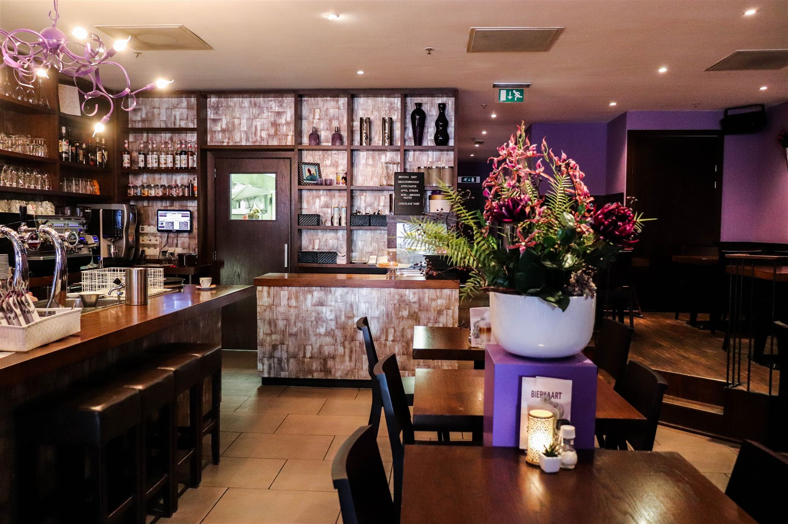
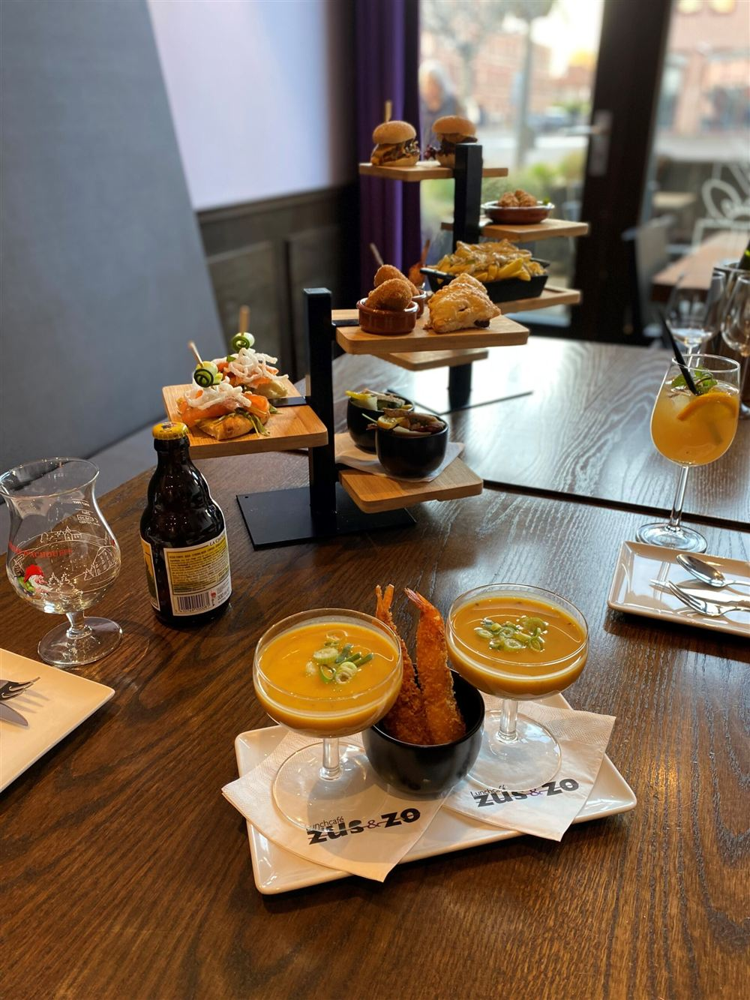
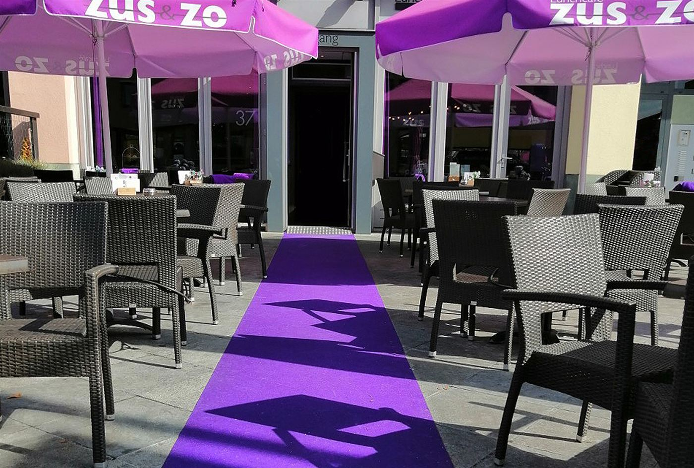

Raadhuisplein 37, Etten-Leur
Lunchcafé Zus & Zo is genieten…
van eten, van drinken, van gezelligheid en gastvrijheid. Aan het Raadhuisplein in Etten-Leur, tegenover het stadskantoor.
Klassiek bruin, trendy paars
Zus & Zo is een gezellige lunchgelegenheid aan het mooie Raadhuisplein, waar vaak leuke evenementen plaatsvinden. De inrichting is een mix van een klassiek bruin en een trendy paars decor, dus voor een breed publiek toegankelijk.
U kunt bij ons terecht voor koffie met een lekkernij, een uitgebreide lunch, een gezellige High Tea, een borrel op ons sfeervolle terras, een diner op vrijdagavond en feesten of partijen.
Een dag bij Zus & Zo
- 10.00Koffie met iets lekkers
- lunchBroodjes, salades, sandwiches
- 14.00High Tea & High Cocktail
- vr 17.00Diner & High Bites
Keuken sluit een half uur voor sluitingstijd
De kaart
Van de fameuze salades en luxe belegde broodjes tot warme gerechten. Onze sandwich Zus en de Mexicaanse salade zijn inmiddels erg bekend in Etten-Leur en omgeving. Ook voor de jongste gasten is er veel lekkers.
Op vrijdag vanaf 17.00 uur, naast de gewone kaart. Warme gerechten worden geserveerd met friet met mayonaise, groenten en/of salade.
Allergie? Meld het ons. Er is een gluten- en lactosevrije kaart. De kaart wisselt met de seizoenen; vraag gerust naar de actuele kaart. Alle prijzen in euro's, onder voorbehoud van typefouten; de prijs in de kassa is de juiste prijs.
Originele kaarten (PDF): Lunchkaart Dinerkaart Gluten- en lactosevrij
High Tea
€ 24,95 per persoon
Een middag bijkletsen bij een luxe High Tea, geserveerd in drie gangen:
- Soep Een huisgemaakte soep om mee te beginnen.
- Hartig Een etagère vol kleine hartige gerechtjes, waaronder onze bekende Sandwich Zus.
- Zoet Heerlijke zoete lekkernijen, zoals een chocoladebrownie.
Alles geserveerd met diverse theesoorten en onze speciale verse thee.
High Tea tijden
- Maandag t/m donderdagvanaf 14.00
- Vrijdagvanaf 14.30
- Zaterdagvanaf 15.00
- Schoolvakantiesvanaf 15.00
Vanaf 2 personen. Reserveren is gewenst, en vanaf 4 personen noodzakelijk. High Tea is niet mogelijk op het terras.
Kinder High Tea
Voor onze kleine gasten, € 16,95 per persoon.
High Tea to go
Ook mee naar huis, € 24,95 per persoon. Informeer naar de mogelijkheden.
High Cocktail
€ 47,95 per persoon, maandag t/m zaterdag vanaf 14.00 uur. Een selectie cocktails met smakelijke bites; ideaal om te borrelen met vrienden of collega's. Ook alcoholvrij. Reserveren is noodzakelijk.
Glutenvrij en/of lactosevrij: € 4,95 p.p. extra. Speciale dieetwensen of allergieën? Laat het weten bij de reservering, dan houden we er rekening mee.

Vrijdagavond diner
Ook op vrijdagavond trekken wij alles uit de kast om u een gezellige avond te bezorgen.
Vanaf 17.00 uur kunt u naast onze gewone kaart genieten van een heerlijk diner. We serveren tot 20.30 uur.
High Bites
Een beetje van Zus en een beetje van Zo. Diverse warme en koude hartige hapjes in drie rondes, een mix van vlees, vis en vegetarisch. Lekker samen genieten onder het genot van een hapje en een drankje.
€ 25,95 p.p.

Een borrel op het terras
Aan het Raadhuisplein, onder de paarse parasols. Voor het terras nemen we geen reserveringen aan: kom gewoon langs.
Feesten & partijen
Een verjaardag, een bruiloft, een vrijgezellenfeest, een personeelsuitje of een communiefeest: dan bent u bij Zus & Zo aan het juiste adres.
's Avonds en in het weekend openen wij graag onze deuren voor uw besloten feest. De mogelijkheden zijn divers: een koud of warm buffet, een 3- of 4-gangendiner, een kraamfeest of een Brabantse koffietafel. Wij bespreken graag alle mogelijkheden met u.
We hebben een uitstekende geluidsinstallatie, en u kunt ook een eigen DJ regelen om het feest compleet te maken. Door onze centrale ligging zijn we ook voor gasten van buiten Etten-Leur makkelijk te vinden. En u wordt bediend door ons altijd enthousiaste, gastvrije team.
Of loop eens binnen bij Zus & Zo.
Bezorging bedrijven
Op zoek naar een heerlijke lunch of diner bij u op het bedrijf? Wij bezorgen van maandag t/m vrijdag bij bedrijven in Etten-Leur: een ruim assortiment broodjes, salades, vergaderpakketten en warme maaltijden. Ook jus d'orange, melk en andere dranken kunnen wij erbij verzorgen.
Bel of mail ons, dan sturen wij u graag onze bestellijst en de mogelijkheden toe.
Reserveren
Voor een uitgebreide lunch, High Tea of een diner op vrijdagavond kunt u altijd reserveren.
076 50 41134- Reserveren gaat telefonisch, of loop even bij ons binnen.
- Wij nemen geen reserveringen per e-mail aan.
- Voor het terras nemen we geen reserveringen aan.
Cadeaubon
Wij hebben diverse cadeaubonnen voor lunch en/of High Tea. Leuk om te geven, en vooral ook leuk om te krijgen.
Vraag ernaar aan de bar of bel ons.
Openingstijden
- Maandag10.00 – 17.30
- Dinsdag10.00 – 17.30
- Woensdag10.00 – 17.30
- Donderdag10.00 – 17.30
- Vrijdag10.00 – 21.00
- Zaterdag10.00 – 17.00
- Zondagkoopzondag 12.00 – 17.00
Koopzondag: altijd de laatste zondag van de maand. We zijn ook open bij evenementen in het centrum van Etten-Leur. De keuken sluit een half uur voor sluitingstijd. Gesloten op 1e en 2e Kerstdag en Nieuwjaarsdag.
Contact
Lunchcafé Zus & ZoRaadhuisplein 37
4873 BH Etten-Leur
Volg ons voor acties en evenementen:
Plan uw route